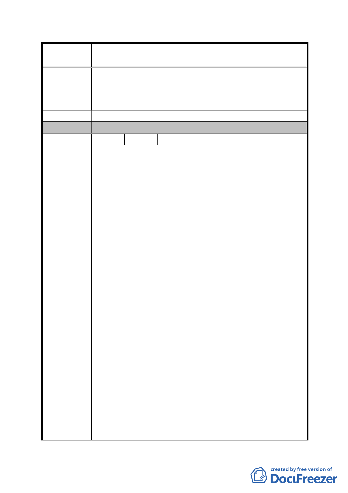

案
名
修訂臺北市「基隆河（中山橋至成美橋段）附近地區土地使
用分區與都市設計管制要點」（北段地區）計畫案
6、附近已有百貨公司及大賣場，本基地既偏遠又地形狹長，
硬性規定2、3樓以上要做商業使用，中小企業如何願意
進駐，建議取消。
建 議 辦 法 （同上）
委 員 會 決 議 同編號 1。
編 號 4 陳情人 陳春銅等 9 人（A11）
一、條文:四、容積放寬規定
內容：2、放寬規定：建築物允許…「有效面積」乘以「(附
表1指定使用項目之容積樓地板面積)/(申請基地總
容積樓地板面積)×100%」乘以二分之一計算之。且不
得超過法定容積之20%，…
條文：十六、開發許可：
內容：(一)本計畫商業區、娛樂區申請開發作住宅使用時，
須於建築基地內提供具有公園、綠地或廣場性質之公
共設施，其計算及提供方式…
(一)2、本項應提供具有公園、綠地或廣場性質之公共
設施面積，不得納入「綜合設計放寬規定」之「有效
面積」計算。
建議理由：修訂計畫本意考量為未來發展全市副都心之潛
陳情理由
力、限制太多、獎勵值降低，很難吸引國內外投資人，
還有可能喪失現有投資人開發意願，並且與原計畫計算
方式差異過大，降低商業區、娛樂區開發意願。
開放空間計算公式修改之後，若以同樣設計套用前後法
令，前者20%獎勵面積全拿，後者則只剩下lO%，若l/2
樓地板設計住宅周途，獎勵面積則只剩下5%，再加上必
須提供約1/lO的基地面積作為公園綠地使用，且不得作
為開放空間有效面積計算，實際獎勵面積則只剩2%不
到，因此搶照風氣勢必出現，違規使用狀況將持續。
二、條文：四、容積放寬規定
內容：（二）依本計畫…其中適用容積移轉者不得超過基
準容積之20%。
建議理由：已辦理容積移轉之基地將不符計畫內容，將造成
執照搶建。大直金泰段建築容積已屬低密度開發跟信義
區相比相對的低了很多假如容積放寬規定又被刪減會
- 56 -